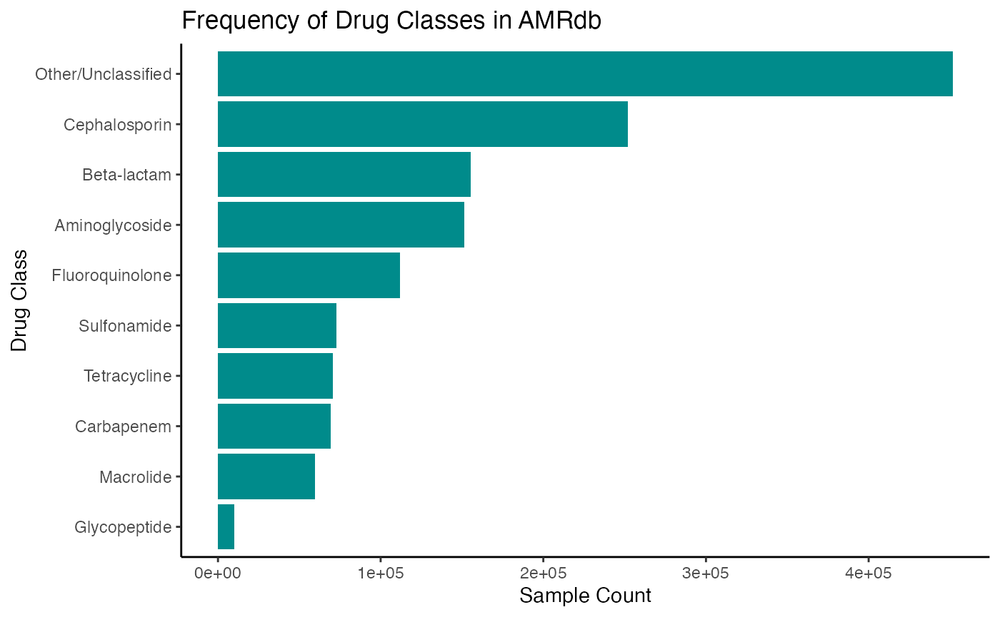

Installation
Get the latest stable R release from CRAN.
install.packages("AMRdb")To install the development version from Github use:
if (!requireNamespace("remotes", quietly = TRUE)) {
install.packages("remotes")
}
remotes::install_github("EveliaCoss/AMRdb")Or you can install AMRdb from Bioconductor using the following
code:
if (!requireNamespace("BiocManager", quietly = TRUE)) {
install.packages("BiocManager")
}
BiocManager::install("AMRdb")And the development version from GitHub with:
BiocManager::install("EveliaCoss/AMRdb")AMRdb package
This package contains a curated collection of datasets designed to support antimicrobial resistance (AMR) analysis across public and clinical sources.
We focus primarily on
antibiograms_db, a harmonized dataset integrating susceptibility profiles retrieved from ENA, BV-BRC, and NCBI, covering multiple bacterial genera. It enables out-of-the-box exploration of phenotypic resistance across antibiotics and taxa and serves as a robust alternative to ad hoc clinical tables.Gene-level predictions are also available via
rgi_results, a dataset produced using CARD-RGI annotations that assigns ARO-based resistance features to samples. This genomic metadata allows comparative analyses between phenotypic and genotypic resistance trends.
For custom modeling and validation workflows, AMRdb provides cleaned metadata for both test and training subsets:
training_db_cleanedandtest_db_cleanedinclude standardized MIC values, genus annotations, and curated phenotype assignments after preprocessing and recategorization.The corresponding raw metadata, stored in
training_metadata_dbandtest_metadata_db, preserves all original accession-level values and annotations for traceability and auditing.
Together, these resources support reproducible classification, comparative genomics, and resistance prediction pipelines in a user-friendly format.
Exploring Resistance: A Deep Dive into
antibiograms_db
The AMRdb::antibiograms_db dataset contains standardized
antimicrobial susceptibility records across diverse bacterial genera,
with 14 variables and over 115661 biosamples. It integrates phenotype
and taxonomy metadata from ENA, NCBI BioSample, and BV-BRC, enabling
out-of-the-box analysis of resistance patterns and comparative
modeling.
library(AMRdb)
str(antibiograms_db)
#> spc_tbl_ [1,404,850 × 14] (S3: spec_tbl_df/tbl_df/tbl/data.frame)
#> $ biosample : chr [1:1404850] "SAMN01163409" "SAMN01163409" "SAMN01163409" "SAMN01163409" ...
#> $ sra_biosample : chr [1:1404850] "SRS362631" "SRS362631" "SRS362631" "SRS362631" ...
#> $ scientific_name_Antibiogram: chr [1:1404850] "Enterobacter cloacae" "Enterobacter cloacae" "Enterobacter cloacae" "Enterobacter cloacae" ...
#> $ antibiotic : chr [1:1404850] "tetracycline" "chloramphenicol" "ampicillin" "gentamicin" ...
#> $ phenotype : chr [1:1404850] "resistant" "resistant" "resistant" "susceptible" ...
#> $ measurement_sign : chr [1:1404850] "==" "==" "==" "==" ...
#> $ measurement_value : chr [1:1404850] "10" "12" "6" "20" ...
#> $ measurement_units : chr [1:1404850] "mm" "mm" "mm" "mm" ...
#> $ typing_method : chr [1:1404850] "disk diffusion" "disk diffusion" "disk diffusion" "disk diffusion" ...
#> $ typing_platform : chr [1:1404850] "Vitek GM-NEG card" "Vitek GM-NEG card" "Vitek GM-NEG card" "Vitek GM-NEG card" ...
#> $ standard : chr [1:1404850] "CLSI" "CLSI" "CLSI" "CLSI" ...
#> $ genomes : chr [1:1404850] "BVBRC_550.2163 ftp://ftp.sra.ebi.ac.uk/vol1/analysis/ERZ363/ERZ3637173/SAMN01163409.contigs.fa.gz" "BVBRC_550.2163 ftp://ftp.sra.ebi.ac.uk/vol1/analysis/ERZ363/ERZ3637173/SAMN01163409.contigs.fa.gz" "BVBRC_550.2163 ftp://ftp.sra.ebi.ac.uk/vol1/analysis/ERZ363/ERZ3637173/SAMN01163409.contigs.fa.gz" "BVBRC_550.2163 ftp://ftp.sra.ebi.ac.uk/vol1/analysis/ERZ363/ERZ3637173/SAMN01163409.contigs.fa.gz" ...
#> $ accession : chr [1:1404850] "SRR4105460 SRR568037" "SRR4105460 SRR568037" "SRR4105460 SRR568037" "SRR4105460 SRR568037" ...
#> $ read_type : chr [1:1404850] "PAIRED_ILLUMINA PAIRED_ILLUMINA" "PAIRED_ILLUMINA PAIRED_ILLUMINA" "PAIRED_ILLUMINA PAIRED_ILLUMINA" "PAIRED_ILLUMINA PAIRED_ILLUMINA" ...
#> - attr(*, "spec")=
#> .. cols(
#> .. biosample = col_character(),
#> .. sra_biosample = col_character(),
#> .. species = col_character(),
#> .. antibiotic = col_character(),
#> .. phenotype = col_character(),
#> .. measurement_sign = col_character(),
#> .. measurement_value = col_character(),
#> .. measurement_units = col_character(),
#> .. typing_method = col_character(),
#> .. typing_platform = col_character(),
#> .. standard = col_character(),
#> .. genomes = col_character(),
#> .. reads = col_character(),
#> .. read_type = col_character()
#> .. )
#> - attr(*, "problems")=<externalptr>The AMRdb::antibiograms_db data contains
# Extract unique antibiotic names:
antibiotics <- sort(unique(antibiograms_db$antibiotic))
# Initialize classification table:
antibiotic_class <- data.frame(
antibiotic = antibiotics,
drug_class = NA_character_, # Puedes usar factor si prefieres
stringsAsFactors = FALSE
)
# Assign drug class categories:
antibiotic_class <- antibiotic_class %>%
mutate(drug_class = case_when(
str_detect(antibiotic, "penicillin|amoxicillin|ampicillin|oxacillin|methicillin|ticarcillin|piperacillin") ~ "Beta-lactam",
str_detect(antibiotic, "cefa|ceph|cef") ~ "Cephalosporin",
str_detect(antibiotic, "carbapenem|imipenem|meropenem|doripenem|biapenem") ~ "Carbapenem",
str_detect(antibiotic, "macrolide|azithromycin|clarithromycin|erythromycin|spiramycin|telithromycin") ~ "Macrolide",
str_detect(antibiotic, "tetracycline|doxycycline|oxytetracycline|minocycline|chlortetracycline") ~ "Tetracycline",
str_detect(antibiotic, "aminoglycoside|gentamicin|tobramycin|streptomycin|amikacin|netilmicin|neomycin") ~ "Aminoglycoside",
str_detect(antibiotic, "sulfa|sulfamethoxazole|sulfisoxazole|sulfadimethoxine|sulfonamide") ~ "Sulfonamide",
str_detect(antibiotic, "quinolone|ciprofloxacin|levofloxacin|norfloxacin|moxifloxacin|gatifloxacin") ~ "Fluoroquinolone",
str_detect(antibiotic, "glycopeptide|vancomycin|teicoplanin|dalbavancin") ~ "Glycopeptide",
TRUE ~ "Other/Unclassified"
))
# Merge classifications back into original dataset:
antibiograms_db <- antibiograms_db %>%
left_join(antibiotic_class, by = "antibiotic")
# Plot
antibiograms_db %>%
count(drug_class, sort = TRUE) %>%
ggplot(aes(x = reorder(drug_class, n), y = n)) +
geom_col(fill = "darkcyan") +
coord_flip() +
labs(title = "Frequency of Drug Classes in AMRdb",
x = "Drug Class",
y = "Sample Count") +
theme_classic()
Citing AMRdb
We hope that AMRdb will be useful for your research. Please use the following information to cite the package and the overall approach. Thank you!
## Citation info
citation("AMRdb")
#> To cite package 'AMRdb' in publications use:
#>
#> EveliaCoss (2025). _Mi articulo_. doi:10.18129/B9.bioc.AMRdb
#> <https://doi.org/10.18129/B9.bioc.AMRdb>,
#> https://github.com/EveliaCoss/AMRdb/AMRdb - R package version 0.1.0,
#> <http://www.bioconductor.org/packages/AMRdb>.
#>
#> EveliaCoss (2025). "Mi articulo." _bioRxiv_. doi:10.1101/TODO
#> <https://doi.org/10.1101/TODO>,
#> <https://www.biorxiv.org/content/10.1101/TODO>.
#>
#> To see these entries in BibTeX format, use 'print(<citation>,
#> bibtex=TRUE)', 'toBibtex(.)', or set
#> 'options(citation.bibtex.max=999)'.Here is an example of you can cite your package inside the vignette: